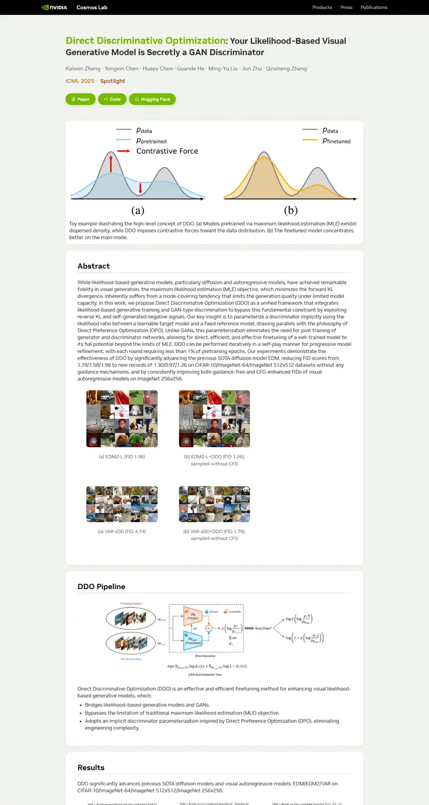

Direct Discriminative Optimization: Your Likelihood-Based Visual Generative Model is Secretly a GAN Discriminator
A corporate lab notebook on sage paper: a black brand bar, one electric green that ties the title to every button, and each section filed in its own soft white card.

Checked against the rendered page. Sections fade in on scroll, so the Abstract card is still transparent in the 1440 screenshot.
Why it is here
Most finished-looking page in the pool. Branded top bar, a vivid green accent that ties title, pill buttons and the venue tag together, and every section sits in a soft rounded card on a tinted background. The teaser, abstract and pipeline are clearly framed, and the rhythm stays consistent.
Overview
Color Palette
Typography
NVIDIA-NALA
Direct Discriminative Optimization: Your Likelihood-Based Visual Gener
Abstract · Method · Results · BibTeX — 0123456789
Consolas
Direct Discriminative Optimization: Your Likelihood-Based Visual Gener
Abstract · Method · Results · BibTeX — 0123456789
Spacing & Shape
Page Modules
Guidelines
More like this

CRAFT: Training-Free Cascaded Retrieval for Tabular QA
A tidy product manual in pale blueprint blue, where every stage wears its own colored edge.

Efficient Self-Evaluation for Diffusion Language Models via Sequence Regeneration
A tidy stack of rounded cards washed in a blue-violet-apricot dawn, signed with a gradient wordmark.

FIGMA: Towards FIne-Grained Music retrievAl
A music journal on warm paper: a heavy Newsreader headline under a red kicker, big red serif numerals for the results, and figures resting in soft cream frames.

GuideDog: A Real-World Egocentric Multimodal Dataset for Blind and Low-Vision Accessibility-Aware Guidance
A quiet monograph page: one serif column, oxblood ink for the links, and a table that blushes only at its own row.

LaMI: Augmenting Large Language Models via Late Multi-Image Fusion
A careful conference handout: Noto Serif headings, navy outlined buttons and soft grey bands taking turns.

PairCoder++: Pair Programming as a Universal Paradigm for Verified Code-Driven Multimodal and Structured-Artifact Generation
A crisp white product page: a blue announcement strip, ink-black pill buttons and every figure on a soft-shadowed card.